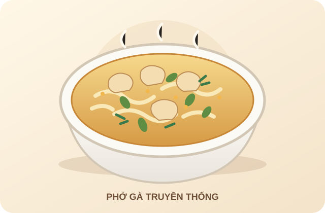

Phở gà truyền thống
Bát phở gà thơm dịu với nước dùng trong, thịt gà mềm, bánh phở trắng và rau thơm tươi. Công thức này phù hợp cho khoảng 2 người ăn.

Thời gian chuẩn bị: 20 phút · Thời gian nấu: 40 phút · Khẩu phần: 2 người
Nguyên liệu
| Tên nguyên liệu | Số lượng | Đơn vị / ghi chú |
|---|---|---|
| Thịt gà | 400 | g, có xương càng tốt |
| Bánh phở | 300 | g |
| Hành tây | 1 | củ nhỏ |
| Gừng | 30 | g |
| Hoa hồi | 2 | cánh |
| Quế | 1 | thanh nhỏ |
| Nước mắm | 2 | muỗng canh, nêm theo khẩu vị |
| Hành lá, rau mùi | 1 | nắm nhỏ, thái để ăn kèm |
| Muối và tiêu | Vừa đủ | nêm nếm |
Các bước thực hiện
- Nướng sơ hành tây và gừng trên chảo nóng để dậy mùi thơm. Rửa sạch thịt gà.
- Cho thịt gà vào nồi cùng khoảng 1,5 lít nước. Thêm hành tây, gừng, hoa hồi và quế; đun sôi rồi hạ lửa nhỏ, hớt bọt và nấu đến khi gà chín.
- Vớt gà ra để nguội bớt rồi xé hoặc thái thành miếng vừa ăn. Lọc nước dùng nếu cần, nêm nước mắm, muối và tiêu.
- Luộc hoặc chần bánh phở theo hướng dẫn trên bao bì, sau đó chia đều vào hai bát.
- Xếp thịt gà lên bánh phở, chan nước dùng nóng và thêm hành lá, rau mùi. Dùng ngay khi còn nóng.